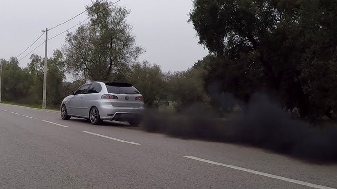

Ibiza 6L bem carregaaada
Ibiza 6L bem carregaaada
Ibiza 6L bem carregaaada
Ibiza 6L bem carregaaada
Ibiza 6L bem carregaaada
Ibiza 6L bem carregaaada
tá a puxar bemmm!
id="paragrafo"
O Seat Ibiza 6L refere-se à segunda geração do Seat Ibiza,
produzida entre
1993 e 2002,
um período de
grande
popularidade para o modelo na Europa. Este modelo, que deu origem a variantes desportivas como a Cupra e versões
diesel fiáveis, foi fundamental para o sucesso da Seat na época, destacando-se pela sua fiabilidade e
praticidade.
Características principais:
Período de Produção: 1993-2002.
Design: Apresentava um design mais curvo e moderno em relação ao seu antecessor.
Plataforma: Partilhava plataforma com o Volkswagen Polo.
Motores: Disponível com uma vasta gama de motores a gasolina e diesel, incluindo os motores a diesel que se
tornaram populares por sua economia e durabilidade.
Versões: Incluía variantes de 3 e 5 portas, e versões desportivas como o Ibiza Cupra e o Cupra R, equipados com
motores turbo.
Legado: Foi um carro chave para a Seat, consolidando a marca e lançando as bases para as gerações futuras, como
o Ibiza 6J e 6L que se seguiram.
Em resumo: o Ibiza 6L foi um modelo de sucesso que marcou a entrada da Seat numa nova era, combinando design,
desempenho e uma excelente relação custo-benefício, que o tornaram um dos carros mais vendidos na Europa na
altura.

Texto a italico
Texto b sublinhado
|
Horário
|
| Segunda |
Terça |
Quarta |
Quinta |
Sexta |
|
1
|
2
|
3
|
4
|
5
|
|
6
|
7
|
8
|
9
|
|
10
|
11
|
12
|
13
|
Topo
Parágrafo
-
HTML
-
Ibiiiiiizaa
-
BCrypt
-
Ibiiiiiizaa
- Lisboa
- Porto
- Caldas da Rainha
Ibiza 6L a fumar mm bemm
ta a puxarr bemm